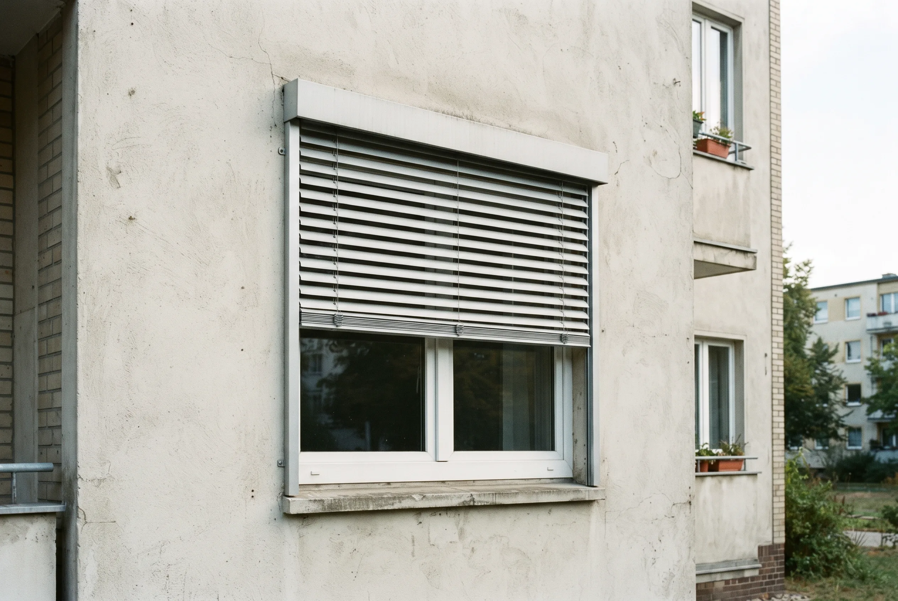
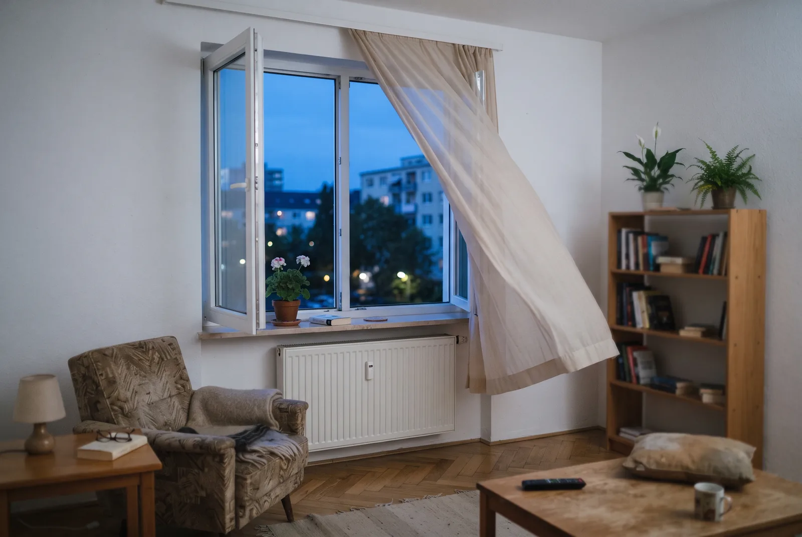
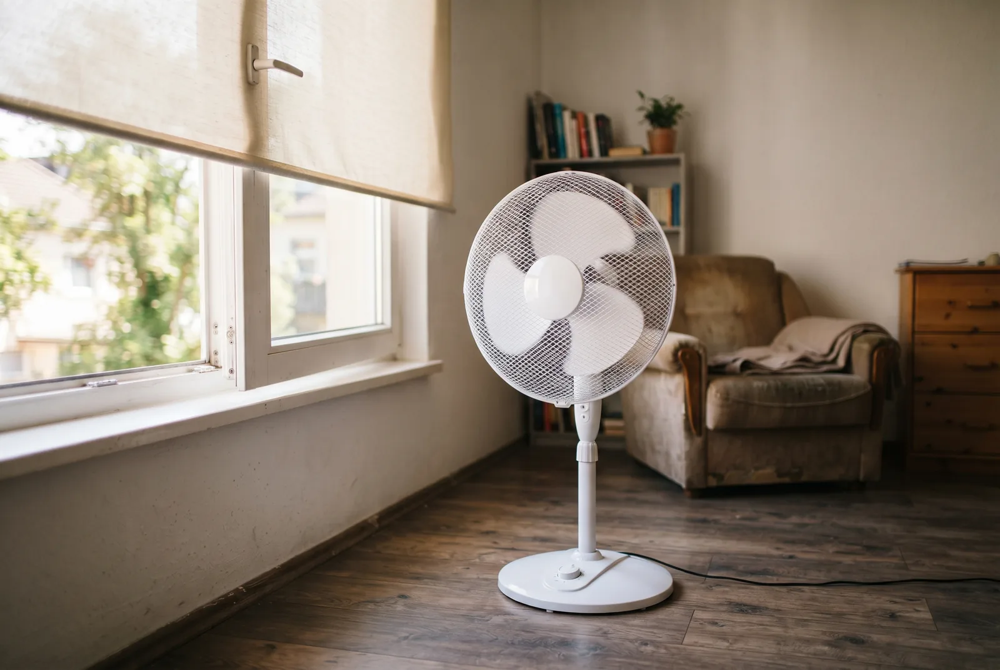

Inhaltsverzeichnis
- Warum sich Ihre Wohnung aufheizt
- Stufe eins: Sofortmaßnahmen für 0 Euro
- Ventilator richtig einsetzen
- Stufe zwei: kleines Budget, spürbare Wirkung
- Außenliegender Sonnenschutz: die wirksamste Einzelmaßnahme
- Dämmung und Fenster
- Wärmepumpe mit Kühlfunktion
- Förderung sichern: die richtige Reihenfolge
- Wann eine Klimaanlage doch die richtige Antwort ist
- Fazit
- Häufige Fragen
Das Wichtigste in Kürze
- Kernaussage: Wärme draußen halten schlägt jedes nachträgliche Herunterkühlen. Das Umweltbundesamt betont, dass es vor allem darauf ankommt, dass sich die Wohnung gar nicht erst aufheizt.
- Stufe eins kostet nichts: Tagsüber Fenster und Sonnenschutz zu, nachts mehrere Stunden quer lüften, vermeidbare Wärmequellen abschalten.
- Der Ventilator kühlt Sie, nicht den Raum: Er senkt die Lufttemperatur nicht, macht die Hitze aber spürbar erträglicher – und das mit einem Bruchteil des Stroms eines Klimageräts.
- Außen blocken, nicht innen: Übliche Verglasung lässt 60 bis 70 Prozent der Sonnenenergie in den Raum. Nur außenliegender Sonnenschutz stoppt sie vor der Scheibe.
- Der Bund beteiligt sich: Außenliegender Sonnenschutz mit automatischer Steuerung und Dämmmaßnahmen werden über die BEG-Einzelmaßnahmen beim BAFA mit einem Grundfördersatz von 15 Prozent gefördert. Der iSFP-Bonus von 5 Prozent greift für Anträge ab dem 21. Juli 2026 erst ab einem förderfähigen Mindestinvestitionsvolumen von 30.000 Euro – bei einer reinen Sonnenschutz-Maßnahme also in der Regel nicht.
- Alle Förderangaben: Stand 13. Juli 2026, ohne Gewähr – Details in der Hinweisbox am Ende des Beitrags.
Warum sich Ihre Wohnung aufheizt – und was das für die Lösung bedeutet
Die entscheidende Wärmemenge kommt nicht durch die Wand, sondern durch das Glas. Eine übliche Verglasung hat einen g-Wert von 0,6 bis 0,7. Der g-Wert beschreibt, welcher Anteil der auftreffenden Sonnenenergie nach innen gelangt: Bei 0,65 landen also rund 65 Prozent der Strahlung als Wärme im Raum. Ein besonntes Fenster wirkt damit über Stunden wie ein Heizkörper, den niemand abschalten kann.
Dazu kommen die internen Lasten. Kühlschrank, Backofen, Wäschetrockner, Router, Spielkonsole, Netzteile im Standby: Jedes Watt elektrische Leistung wird am Ende zu Wärme im Raum. In einer kleinen Wohnung summiert sich das an einem Hitzetag zu einer spürbaren Zusatzheizung.
Der dritte Faktor ist die Bauweise. Wohnungen direkt unter dem Dach trifft es doppelt: Die Dachfläche nimmt die Sonneneinstrahlung über den ganzen Tag auf, und bei einem Leichtbaudach ohne ausreichende Dämmung wandert diese Wärme mit wenigen Stunden Verzögerung in den Wohnraum. Räume mit Süd- und Westorientierung bekommen die intensivste Nachmittagssonne ab, wenn die Außenluft ohnehin am wärmsten ist. Massive Bauteile wie Beton- oder Ziegelwände puffern die Hitze immerhin, geben sie aber abends wieder ab – deshalb ist die Nachtlüftung so wichtig.
Aus dieser Physik folgt die Reihenfolge dieses Leitfadens. Wer die Sonnenenergie vor der Scheibe stoppt, muss sie hinterher nicht mit Strom wieder aus dem Raum schaffen. Alles, was innen passiert, ist Schadensbegrenzung. Deshalb sortieren wir die Maßnahmen nicht nach Beliebtheit, sondern nach Wirkung – und innerhalb der Wirkung nach dem, was sie kosten.
Stufe eins: Sofortmaßnahmen für 0 Euro, die Sie heute Nacht umsetzen
Die wirksamste kostenlose Maßnahme ist die konsequente Nachtlüftung. Öffnen Sie die Fenster, sobald die Außenluft kühler ist als die Raumluft – im Hochsommer ist das meist erst am späten Abend der Fall – und lassen Sie sie mehrere Stunden bis in den frühen Morgen offen. Ideal ist Querlüftung: gegenüberliegende Fenster in verschiedenen Räumen gleichzeitig geöffnet, damit ein Luftstrom durch die Wohnung zieht. Sobald die Außentemperatur morgens die Innentemperatur übersteigt, schließen Sie alles wieder.
Genauso wichtig ist der Umgang mit dem vorhandenen Sonnenschutz. Rollläden, Jalousien oder Markisen gehören geschlossen, bevor die Sonne auf das Fenster trifft, nicht erst wenn der Raum sich bereits aufgeheizt hat. Bei Ostfenstern bedeutet das früh am Morgen, bei Westfenstern spätestens mittags. Wer außenliegenden Sonnenschutz hat, sollte ihn tagsüber vollständig geschlossen halten, auch wenn es den Raum abdunkelt.
Der dritte Hebel sind die Wärmequellen in der Wohnung. Backofen und Wäschetrockner an einem Hitzetag stehen zu lassen, spart mehr Grad als jeder Hausmittel-Trick. Trocknen Sie Wäsche auf dem Balkon statt im Zimmer, schalten Sie Geräte im Standby vom Netz und kochen Sie kalt oder kurz.
Und die berühmten Hausmittel? Feuchte Tücher und gefrorene Flaschen erzeugen tatsächlich Verdunstungs- beziehungsweise Schmelzkälte, aber die Energiemenge ist im Verhältnis zur Wärme eines besonnten Raums minimal und nach kurzer Zeit erschöpft. Der Preis: mehr Luftfeuchtigkeit, was das Schwitzen erschwert und bei Dauereinsatz Feuchteschäden begünstigen kann. Als Notbehelf am Bett vertretbar, als Strategie nicht.
Gut zu wissen: Die häufigste Fehleinschätzung ist das Lüften am Morgen. Wer um acht Uhr „einmal richtig durchlüftet", holt an einem Hitzetag bereits warme Luft herein und macht die Nachtkühlung zunichte.
Ventilator richtig einsetzen – er kühlt Sie, nicht den Raum
Ein Ventilator senkt die Lufttemperatur nicht um ein einziges Grad. Er verwirbelt die vorhandene Luft und fügt durch seinen Motor sogar minimal Wärme hinzu. Trotzdem ist er die sinnvollste aktive Hilfe, die es ohne Kältetechnik gibt – weil er nicht den Raum kühlt, sondern Sie. Der Luftzug trägt die feuchtwarme Schicht direkt über der Haut ab und beschleunigt die Verdunstung des Schweißes. Das Ergebnis ist eine spürbar niedrigere gefühlte Temperatur bei unveränderter Raumtemperatur.
Daraus folgt die wichtigste Regel: Der Ventilator gehört dorthin, wo Sie sind, nicht in die Mitte des Zimmers. Ein leerer Raum, in dem ein Ventilator läuft, verbraucht nur Strom.
Eine zweite, wirklich wirksame Anwendung gibt es nachts. Stellen Sie den Ventilator so ans geöffnete Fenster, dass er die warme Innenluft nach draußen bläst. Ein zweites geöffnetes Fenster auf der gegenüberliegenden Seite sorgt dann für Nachströmung kühler Außenluft. So beschleunigen Sie die Nachtauskühlung deutlich – hier arbeitet das Gerät tatsächlich am Raum und nicht nur an Ihrer Haut.
Beim Strom ist der Abstand gewaltig. Ein Standventilator bewegt sich in der Größenordnung einiger Dutzend Watt, ein mobiles Klimagerät liegt um ein Vielfaches darüber. Das Umweltbundesamt bewertet bewegliche Klimageräte ausdrücklich als ineffizient: Sie schaffen die warme Abluft über einen Schlauch nach draußen, und die nachströmende Außenluft heizt den Raum zusätzlich auf. Wie viel ein solches Gerät im Sommer tatsächlich kostet, rechnen wir separat durch.
Unser Tipp: Was ein mobiles Klimagerät im Sommer wirklich an Strom kostet – mit Rechnung statt Bauchgefühl.

Stufe zwei – kleines Budget, spürbare Wirkung
Wenn die kostenlosen Maßnahmen ausgereizt sind und keine baulichen Eingriffe möglich sind, bleibt ein Zwischenfeld an Lösungen, die im zwei- bis niedrigen dreistelligen Bereich liegen. Ehrlich eingeordnet: Sie ersetzen keinen außenliegenden Sonnenschutz, aber sie machen einen Unterschied.
Sonnenschutzfolien auf der Scheibe reduzieren den Energiedurchlass, indem sie einen Teil der Strahlung reflektieren. Der Preis dafür ist dauerhaft: Die Folie wirkt auch im Winter, wenn Sie die solaren Gewinne eigentlich brauchen, und sie verdunkelt den Raum das ganze Jahr. Zudem kann eine Folie auf einer Isolierverglasung zu thermischen Spannungen führen – bei Mietwohnungen und bei jüngeren Fenstern lohnt vorher ein Blick in die Herstellerangaben und, bei Miete, die Rücksprache mit dem Vermieter.
Innenliegende Rollos, Plissees und Thermovorhänge in hellen, reflektierenden Ausführungen sind die realistische Notlösung, wenn außen nichts geht. Ihr Nachteil ist physikalisch: Die Sonnenenergie hat die Scheibe bereits passiert, wenn sie auf den Stoff trifft. Die Wärme steckt dann bereits im Raum, das Rollo heizt sich auf und gibt sie an die Raumluft ab. Ein reflektierender, möglichst weißer Stoff mit Abstand zur Scheibe reduziert diesen Effekt, hebt ihn aber nicht auf.
Sonnensegel, Balkonverschattung und Markisen gehören dagegen bereits zur richtigen Kategorie: Sie halten die Sonne draußen. Wo Balkon oder Loggia vor den Fenstern liegen, ist ein Sonnensegel eine der wirksamsten Maßnahmen in diesem Budgetrahmen.
Für Mieterinnen und Mieter ist die entscheidende Frage, was ohne Zustimmung des Vermieters zulässig ist. Alles, was innen bleibt und rückstandslos entfernt werden kann, ist in der Regel unkritisch. Sobald Sie in die Fassade bohren, an der Außenhülle etwas befestigen oder ein Gerät fest installieren, sieht die Sache anders aus.
Unser Tipp: Klimaanlage in der Mietwohnung: was erlaubt ist, wann der Vermieter zustimmen muss und wer zahlt.
Heizt sich Ihre Wohnung jeden Sommer auf?
Wir schauen uns Ihr Gebäude an, sagen Ihnen, welche Maßnahme bei Ihnen wirklich etwas bringt, und prüfen, was davon gefördert wird.
Kostenlose ErsteinschätzungAußenliegender Sonnenschutz – die wirksamste Einzelmaßnahme
Wenn Sie in diesem Artikel nur eine Maßnahme mitnehmen, dann diese. Außenliegender Sonnenschutz fängt die Sonnenstrahlung ab, bevor sie das Glas passiert. Die Wärme entsteht damit außerhalb der thermischen Hülle und wird vom Wind abgeführt. Innenliegender Schutz kann das prinzipbedingt nicht leisten, weil die Energie zu diesem Zeitpunkt bereits im Raum ist.
Wie stark der Unterschied ist, zeigt sich in der Normrechnung. Beim Nachweis des sommerlichen Wärmeschutzes nach DIN 4108-2 wird die Wirkung eines Sonnenschutzes über den Abminderungsfaktor FC beschrieben, der mit dem g-Wert der Verglasung zum Gesamtenergiedurchlassgrad multipliziert wird. Außenliegende Systeme erreichen die niedrigen Werte, die die Norm für den vereinfachten Nachweis verlangt – typischerweise FC von 0,3 oder darunter bei üblicher Verglasung. Innenliegende Lösungen liegen deutlich darüber. Der Nachweis selbst ist übrigens nach dem Gebäudeenergiegesetz nur bei Neubauten und größeren Erweiterungen verpflichtend; im Bestand ist er kein Muss, aber ein guter Maßstab.
In der Praxis stehen drei Systemfamilien zur Wahl. Rollläden verdunkeln vollständig, sind robust und schützen zusätzlich vor Einbruch, nehmen dafür aber auch den Ausblick und das Tageslicht. Raffstores mit verstellbaren Lamellen sind der Kompromiss: Sie lenken das Licht in den Raum, halten die direkte Strahlung draußen und erhalten die Sicht nach außen. Textile Screens sind filigraner, lassen gedämpftes Licht durch und eignen sich für große Glasflächen.
Für Bestandsgebäude gilt: Vorbau-Rollläden und Aufsatzsysteme lassen sich in vielen Fällen ohne Eingriff in die Fassadendämmung nachrüsten. Auch für Dachflächenfenster gibt es außenliegende Markisen und Rollläden – gerade für Dachgeschosswohnungen ist das oft der größte einzelne Hebel. In der Eigentümergemeinschaft und in der Mietwohnung braucht die Fassadenmontage allerdings eine Zustimmung, weil sie das äußere Erscheinungsbild verändert.
Dämmung und Fenster – Hitzeschutz, der auch im Winter arbeitet
Der zweite große bauliche Hebel ist die Dämmung, und zwar nicht als Winterthema. Eine gut gedämmte Dachfläche verzögert und dämpft den Wärmestrom von der aufgeheizten Dachhaut in den Wohnraum. Für Wohnungen unter dem Dach ist das häufig die Maßnahme mit dem größten Effekt überhaupt – noch vor dem Sonnenschutz, wenn das Dach schlecht gedämmt ist. Zugleich zahlt sie sich im Winter über niedrigere Heizkosten aus. Wo eine Dachdämmung nicht infrage kommt, ist die Dämmung der obersten Geschossdecke oft die einfachere und günstigere Alternative.
Beim Fenstertausch lohnt es, den g-Wert bewusst mitzuentscheiden. Sonnenschutzverglasung erreicht deutlich niedrigere Werte als Standardglas – bei Zweifachverglasung liegen typische Sonnenschutzgläser im Bereich von 0,3 bis 0,4, bei Dreifachverglasung um 0,25. Es lässt also nur rund ein Viertel bis ein Drittel der Sonnenenergie in den Raum, statt zwei Dritteln. Der Haken: Was im Sommer draußen bleibt, fehlt im Winter als kostenlose solare Wärme. Deshalb ist Sonnenschutzglas selten die pauschale Antwort, sondern eine Entscheidung je nach Himmelsrichtung – auf der Südseite mit gutem außenliegendem Sonnenschutz oft überflüssig, auf einer schwer verschattbaren Westfassade dagegen sinnvoll.
Der wichtigste Ratschlag lautet deshalb: Denken Sie den sommerlichen Wärmeschutz bei jeder ohnehin anstehenden Sanierung mit. Wenn das Gerüst für die Fassade steht, ist die Nachrüstung von Vorbau-Raffstores ein Bruchteil dessen, was sie als Einzelvorhaben später kostet. Wer erst das Fenster tauscht und drei Jahre später merkt, dass der Sonnenschutz fehlt, zahlt zweimal.
Unser Tipp: Hitzeschutz für Fenster im Vergleich: Rollladen, Raffstore, Folie und Sonnenschutzglas nebeneinander.

Wärmepumpe mit Kühlfunktion – heizen und kühlen aus einem System
Steht ohnehin ein Heizungstausch an, öffnet sich eine Tür, die viele übersehen: Eine Wärmepumpe kann in vielen Fällen auch kühlen. Damit wird aus der Heizungsentscheidung zugleich eine Hitzeschutz-Entscheidung.
Technisch gibt es zwei Wege. Bei der passiven Kühlung nutzt eine Sole/Wasser- oder Wasser/Wasser-Wärmepumpe das kühle Erdreich beziehungsweise das Grundwasser als Wärmesenke. Der Verdichter bleibt weitgehend aus, nur die Umwälzpumpe läuft. Das ist die energetisch sparsamste Form der aktiven Raumkühlung überhaupt, allerdings mit begrenzter Leistung und an eine Erdsonde oder einen Brunnen gebunden. Bei der aktiven Kühlung kehrt eine reversible Luft/Wasser-Wärmepumpe ihren Kreislauf um. Die Kälteleistung ist höher und besser regelbar, der Stromverbrauch steigt aber deutlich, weil der Verdichter arbeitet.
Beide Varianten setzen im Gebäude eine Flächenheizung voraus – Fußboden-, Wand- oder Deckenheizung. Über klassische Heizkörper lässt sich nicht kühlen, weil ihre Fläche zu klein ist und sie bei niedrigen Temperaturen kondensieren würden. Und selbst mit Flächenheizung ist die Kühlleistung begrenzt: Sie nehmen der Wohnung ein paar Grad, aber keine Klimaanlagen-Kälte.
Eine Sonderrolle spielt die Luft/Luft-Wärmepumpe, also das Splitsystem. Sie heizt und kühlt über dieselben Innengeräte, braucht keine Flächenheizung und keinen Wasserkreis – und sie wird über die KfW-Heizungsförderung 458 genauso gefördert wie jede andere Wärmepumpe, wenn sie als Heizung des Gebäudes dient und die technischen Anforderungen erfüllt. Gerade im Altbau, wo die Umstellung des Wasserkreises aufwendig wäre, ist sie aus unserer Sicht häufig die wirtschaftlichere Lösung. Welches System zu Ihrem Gebäude passt, entscheidet sich an Heizlast, Verteilsystem und Vorlauftemperatur – nicht am Baujahr.
Unser Tipp: Wärmepumpe im Altbau: wann sie sich rechnet und welches System passt.
Förderung sichern – so gehen Sie in der richtigen Reihenfolge vor
Bauliche Hitzeschutzmaßnahmen fördert der Bund über die Bundesförderung für effiziente Gebäude (BEG). Wichtig ist die Zuständigkeit: Sonnenschutz, Dämmung und Fenster laufen als Einzelmaßnahmen über das BAFA, der Heizungstausch dagegen über die KfW (Programm 458). Zwei Töpfe, zwei Verfahren.
Beim BAFA ist der sommerliche Wärmeschutz durch Ersatz oder erstmaligen Einbau außenliegender Sonnenschutzeinrichtungen mit optimierter Tageslichtversorgung ausdrücklich förderfähig. Der Grundfördersatz beträgt 15 Prozent der förderfähigen Ausgaben. Der zusätzliche Bonus für einen individuellen Sanierungsfahrplan (iSFP) von 5 Prozent ist für Anträge ab dem 21. Juli 2026 an eine neue Bedingung geknüpft: Er wird erst ab einem förderfähigen Mindestinvestitionsvolumen von 30.000 Euro gewährt – und nur auf den Betrag, der darüber hinausgeht. Für eine reine Sonnenschutz-Maßnahme läuft er damit in der Regel ins Leere; relevant wird er erst, wenn Sie den Sonnenschutz mit weiteren Maßnahmen an der Gebäudehülle bündeln. Auch die Höchstgrenzen der förderfähigen Ausgaben je Wohneinheit werden mit der Reform zum 21. Juli 2026 angepasst. Welche Sätze und Grenzen für Ihr Vorhaben gelten, hängt am Antragsdatum – das prüfen wir individuell und tagesaktuell für Sie. Innenliegender Sonnenschutz wird nicht gefördert – ein weiterer Grund, außen zu planen.
Beim Heizungstausch gelten für Anträge ab dem 21. Juli 2026 die reformierten Konditionen: 30 Prozent Grundförderung für alle, dazu für Selbstnutzer ein Klimageschwindigkeitsbonus von 16 Prozent und ein einkommensabhängiger Bonus von 40, 30 oder 10 Prozent, gestaffelt nach zu versteuerndem Haushaltseinkommen. Ein Familienzuschlag senkt das anzusetzende Einkommen bei mindestens einem minderjährigen Kind um einmalig 10.000 Euro. Die förderfähigen Kosten sind für die erste Wohneinheit auf 28.000 Euro begrenzt. Die Obergrenze der Förderquote liegt bei 80 Prozent, solange das anzusetzende zu versteuernde Haushaltsjahreseinkommen höchstens 30.000 Euro beträgt (mit mindestens einem minderjährigen Kind im Haushalt bis 40.000 Euro, weil der Familienzuschlag 10.000 Euro abzieht), darüber bei 70 Prozent der förderfähigen Kosten – bei 80 Prozent sind das höchstens 22.400 Euro Zuschuss. Welcher Wert für Ihr Vorhaben gilt, prüfen wir individuell und tagesaktuell.
Für beide Wege gilt: Ohne Energieeffizienz-Experten läuft nichts. Er bestätigt die technische Förderfähigkeit, und ohne diese Bestätigung nimmt weder BAFA noch KfW einen Antrag an. Die Reihenfolge, die Fördermittel kostet, wenn man sie durcheinanderbringt, lautet:
- Angebot einholen.
- Angebot vor der Unterschrift auf Förderfähigkeit prüfen lassen – Positionen, technische Anforderungen, Dimensionierung.
- Liefer- und Leistungsvertrag mit aufschiebender Bedingung unterschreiben, also unter dem Vorbehalt der Förderzusage.
- Bestätigung durch den Energieeffizienz-Experten erstellen lassen.
- Antrag stellen.
- Zusage abwarten.
- Erst dann umsetzen.
Der kritische Punkt liegt zwischen Schritt 5 und Schritt 7: Wer vor der Antragstellung mit dem Vorhaben beginnt, verliert die Förderung. Genau an dieser Stelle setzen wir an. EffiNova prüft Ihr Angebot vor der Vertragsunterschrift auf Förderfähigkeit, übernimmt bei der Wärmepumpe die raumweise Heizlastberechnung, damit die Anlage nicht zu groß und nicht zu klein ausgelegt wird, und begleitet Antrag und Nachweise bis zur Auszahlung.
Wann eine Klimaanlage doch die richtige Antwort ist
Dieser Artikel argumentiert gegen die vorschnelle Klimaanlage, nicht gegen die Klimaanlage an sich. Es gibt Situationen, in denen sie die richtige Entscheidung ist – und sie sind meist gesundheitlicher Natur.
Die Zahlen sind eindeutig: Über 80 Prozent der vom Robert Koch-Institut geschätzten hitzebedingten Sterbefälle entfallen auf Menschen ab 75 Jahren. Wo ältere, pflegebedürftige oder herz-kreislauf-vorerkrankte Menschen wohnen, wo Säuglinge schlafen oder wo eine Wohnung in Tropennächten schlicht nicht mehr unter 26 Grad kommt, ist gekühlte Luft kein Luxus. Wer nachts nicht mehr regeneriert, geht mit einem Defizit in den nächsten Hitzetag.
Wenn Sie sich für ein Gerät entscheiden, ist die Bauart entscheidend. Ein Splitgerät mit Außeneinheit arbeitet deutlich effizienter als ein Monoblock, bei dem der Abluftschlauch durch das gekippte Fenster hängt – dort strömt permanent warme Außenluft nach und arbeitet gegen das Gerät. Das Umweltbundesamt stuft bewegliche Klimageräte aus genau diesem Grund als ineffizient ein und rät, sie nur ausnahmsweise einzusetzen. Ein fest installiertes Splitgerät braucht dafür eine Außeneinheit an der Fassade, also eine Genehmigung von Vermieter oder Eigentümergemeinschaft, und einen Fachbetrieb für den Kältekreis.
Und der wichtigste Zusammenhang: Hitzeschutz und Kühlung sind keine Alternativen, sondern eine Reihenfolge. Je besser die Hülle die Sonne draußen hält, desto kleiner darf das Kühlgerät ausfallen, desto seltener läuft es und desto weniger Strom kostet es. Wer zuerst den Sonnenschutz baut und dann kühlt, zahlt bei der Anschaffung und beim Betrieb weniger. Wer nur kühlt, heizt weiter durchs Fenster und bezahlt es jeden Sommer aufs Neue.

Fazit
Die Wohnung ohne Klimaanlage kühl zu halten ist keine Sammlung von Tricks, sondern eine Reihenfolge. Stufe eins kostet nichts und wirkt sofort: tagsüber dicht machen, nachts konsequent lüften, Wärmequellen abschalten. Stufe zwei kostet wenig und verschafft Luft: Ventilator gezielt einsetzen, Balkon verschatten, innen reflektieren, wo außen nichts geht. Stufe drei ist die einzige, die das Problem tatsächlich löst: außenliegender Sonnenschutz, Dämmung und, wenn ohnehin ein Heizungstausch ansteht, eine Wärmepumpe, die im Sommer mitkühlt.
Der Unterschied zwischen den Stufen ist nicht graduell. Die ersten beiden lindern Symptome, die dritte behandelt die Ursache – und sie arbeitet im Winter weiter, wenn die Dämmung Heizkosten spart. Dass der Bund sich mit einem Grundfördersatz von 15 Prozent an Sonnenschutz und Dämmung beteiligt, verschiebt die Rechnung noch einmal.
Der sinnvolle nächste Schritt ist deshalb nicht der Gang in den Baumarkt, sondern die Frage, welche Maßnahme in Ihrem Gebäude den größten Hebel hat und was davon gefördert wird. Genau das schauen wir uns mit Ihnen an – bevor Sie ein Angebot unterschreiben, nicht danach.
Häufige Fragen
Was tun bei 30 Grad in der Wohnung?
Kurzfristig hilft nur die richtige Reihenfolge: Fenster und Sonnenschutz tagsüber geschlossen halten, alle vermeidbaren Wärmequellen abschalten, nachts und in den frühen Morgenstunden mehrere Stunden quer lüften. Ein Ventilator macht die 30 Grad erträglicher, weil der Luftzug die Verdunstung auf der Haut beschleunigt, senkt die Raumtemperatur aber nicht. Wenn Ihre Wohnung regelmäßig 30 Grad erreicht, ist das ein bauliches Signal: In aller Regel fehlt außenliegender Sonnenschutz oder eine ausreichende Dachdämmung.
Wie kann ich meine Wohnung schnell abkühlen?
Schnell abkühlen lässt sich eine aufgeheizte Wohnung ohne Kältetechnik kaum. Das Umweltbundesamt weist darauf hin, dass es vor allem darauf ankommt, dass sich die Räume gar nicht erst aufheizen. Der wirksamste kurzfristige Hebel ist die Nachtlüftung: Sobald es draußen kühler ist als drinnen, alle Fenster öffnen und Durchzug erzeugen. Tagsüber bleibt alles zu. Ein Ventilator, der die warme Luft nachts nach draußen bläst, beschleunigt den Luftaustausch.
Wie funktioniert der Flaschentrick zum Kühlen der Wohnung?
Beim Flaschentrick stellt man gefrorene Wasserflaschen oder eine Schüssel mit Eis vor einen Ventilator, sodass die Luft über die kalte Oberfläche streicht. Der Effekt ist real, aber sehr klein und sehr kurz: Die Kältemenge einer Flasche reicht rechnerisch nicht ansatzweise gegen die Wärme, die ein besonnter Raum aufnimmt. Sobald das Eis geschmolzen ist, ist der Effekt vorbei, und das verdunstende Wasser erhöht die Luftfeuchtigkeit. Als Notbehelf am Bett vertretbar, als Strategie für die Wohnung untauglich.
Sind 29 Grad zu warm für einen Raum?
29 Grad in der Wohnung sind für gesunde Erwachsene unangenehm, aber nicht akut gefährlich. Kritisch wird es für Risikogruppen und vor allem nachts im Schlafzimmer, weil der Körper die nächtliche Erholungsphase braucht. Wie ernst die Lage ist, zeigt die Statistik: Das Robert Koch-Institut schätzt für die Hitzeperiode bis zur 26. Kalenderwoche 2026 rund 5.100 hitzebedingte Sterbefälle in Deutschland, über 80 Prozent davon bei Menschen ab 75 Jahren. Wer zu einer Risikogruppe gehört oder pflegt, sollte anhaltende Werte um 29 Grad nicht aussitzen.
Wie bekomme ich die Temperatur in der Wohnung dauerhaft runter?
Dauerhaft senken Sie die Innentemperatur nur baulich. Die wirksamste Einzelmaßnahme ist außenliegender Sonnenschutz vor den besonnten Fenstern, weil er die Sonnenenergie stoppt, bevor sie die Scheibe passiert. Der zweite große Hebel ist die Dämmung, allen voran das Dach bei Wohnungen unter dem Dach. Beides fördert der Bund über die Bundesförderung für effiziente Gebäude als Einzelmaßnahme mit einem Grundfördersatz von 15 Prozent der förderfähigen Ausgaben. Der zusätzliche iSFP-Bonus von 5 Prozent ist für Anträge ab dem 21. Juli 2026 an ein förderfähiges Mindestinvestitionsvolumen von 30.000 Euro geknüpft und wird nur auf den Betrag gewährt, der darüber hinausgeht – bei einer reinen Sonnenschutz-Maßnahme bleibt er deshalb in der Regel ohne Wirkung. Voraussetzung ist in jedem Fall die Einbindung eines Energieeffizienz-Experten.
Stand der Angaben (13. Juli 2026): Bundestag und Bundesrat haben am 10. Juli 2026 das neue Gebäudemodernisierungsgesetz (GModG) beschlossen, und die reformierten KfW-Förderbedingungen gelten laut BMWE und KfW für neue Anträge ab dem 21. Juli 2026. Das Gesetz ist jedoch noch nicht verkündet und die geänderte Förderrichtlinie noch nicht im Bundesanzeiger veröffentlicht – alle Zahlen geben den aktuellen Stand des Wissens wieder, ohne Gewähr. Die Förderung steht außerdem unter dem Vorbehalt verfügbarer Bundesmittel; ein Rechtsanspruch besteht nicht. Welche Konditionen für Ihr Vorhaben konkret gelten, prüfen wir gern tagesaktuell für Sie.